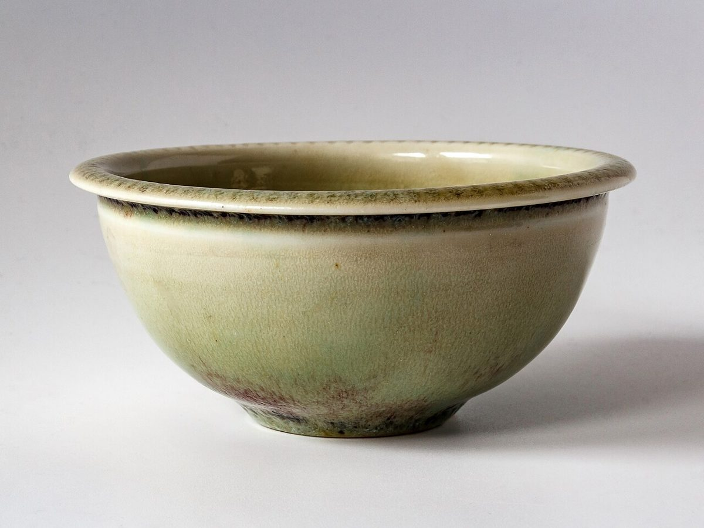

ゆらりと、ひと休み。

この写真はフリー素材のイメージで、店舗の実際ではありません。他地域撮影・撮影地不明のものを含みます。
01
藍の余白(制作側の案)
紺色の落ち着いた面と、小さなからし色、生成りの余白。
色と余白で、ゆっくり読める、ゆっくり過ごせそうな印象をつくりました。
ここに書いているのは制作側の案です。お店から伺った内容ではありません。

この写真はフリー素材のイメージで、店舗の実際ではありません。他地域撮影・撮影地不明のものを含みます。
紺色の落ち着いた面と、小さなからし色、生成りの余白。
色と余白で、ゆっくり読める、ゆっくり過ごせそうな印象をつくりました。
ここに書いているのは制作側の案です。お店から伺った内容ではありません。